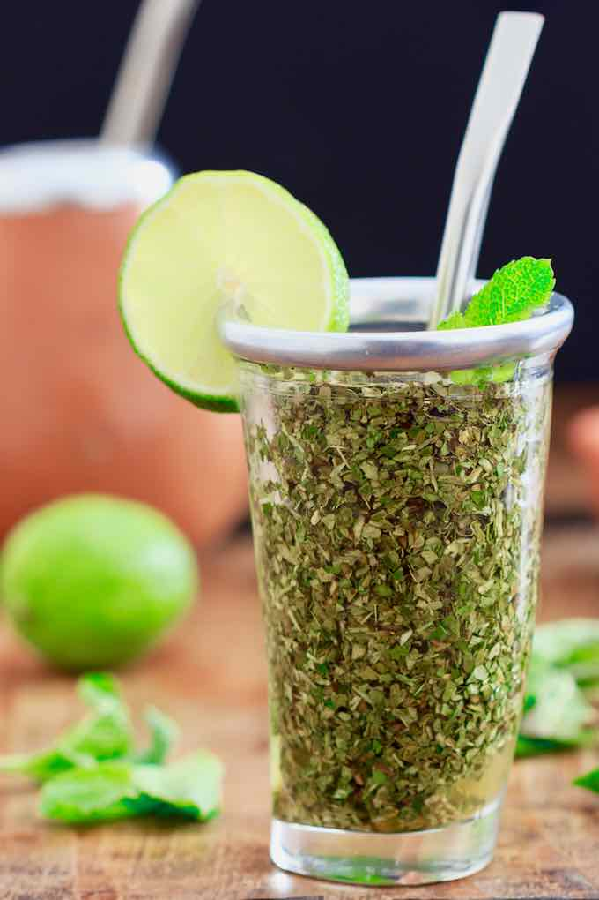

Tereré

Summary
Tereré (ka'ay in Guarani), the national drink of Paraguay, is similar to an iced
herbal tea, except it is prepared with cold water instead of being brewed with hot water, then cooled.
History
Millions of modern-day Guarani all over South America still drink yerba mate, with time-honored rituals and
customs persisting to this day; most notably, drinking yerba mate and tereré with a group
of friends or family gathered in a circle. This practice, symbolic of friendship and acceptance, begins with the
cebador/a (the person making the yerba/tereré) preparing the
beverage, and drinking the first infusion him or herself. Why? Because the first one can be bitter, so you don't
want to be serving that to your guests!
Description
- Preparation time: 5 mins
- Cook time: N/A
- Total time: 5 mins
Ingredients
- 6 tablespoons yerba mate
- Ice cubes
- Cold water
- 2 limes
- A few mint leaves
Equipment
- 1 guampa (or cuia/mate, traditional cup for the preparation of
the tereré)
- 1 thermal vacuum flask
- 1 bombilla (traditional straw)
Ingredients
- Place the ice into the bottom of a 4-cup (1 L) thermos flask, add the lime and mint, and fill with cold
water.
- Fill your guampa about half-full of yerba mate.
- Place your palm over the mouth of the guampa, and give it a good shake. This will
settle the plant material.
- Carefully tip the guampa diagonally, and remove your hand. The yerba mate will now
have made a slope inside the guampa.
- Making sure not to disturb the yerba, carefully pour a little of the infused iced water from the flask down
into the hollow, and let it stand for a few seconds to allow the yerba to absorb the liquid, which will help
to not clog up the bombilla.
- Covering the mouthpiece with your thumb, place the bombilla into the space, and gently
slide it just under the yerba at the bottom.
- Top up with more water, and sip the tereré. Refill as desired, until the yerba
loses its flavor.
Navigation: